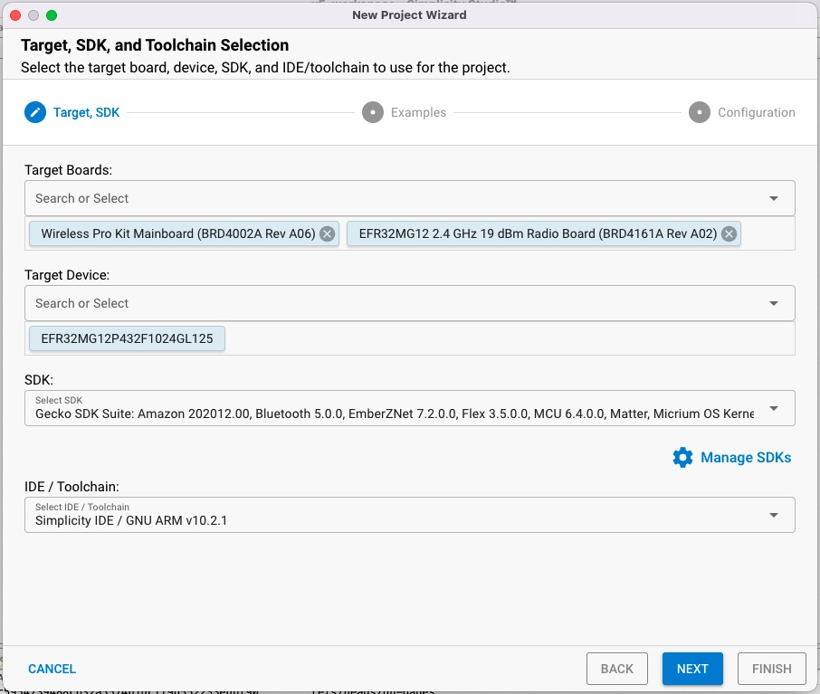
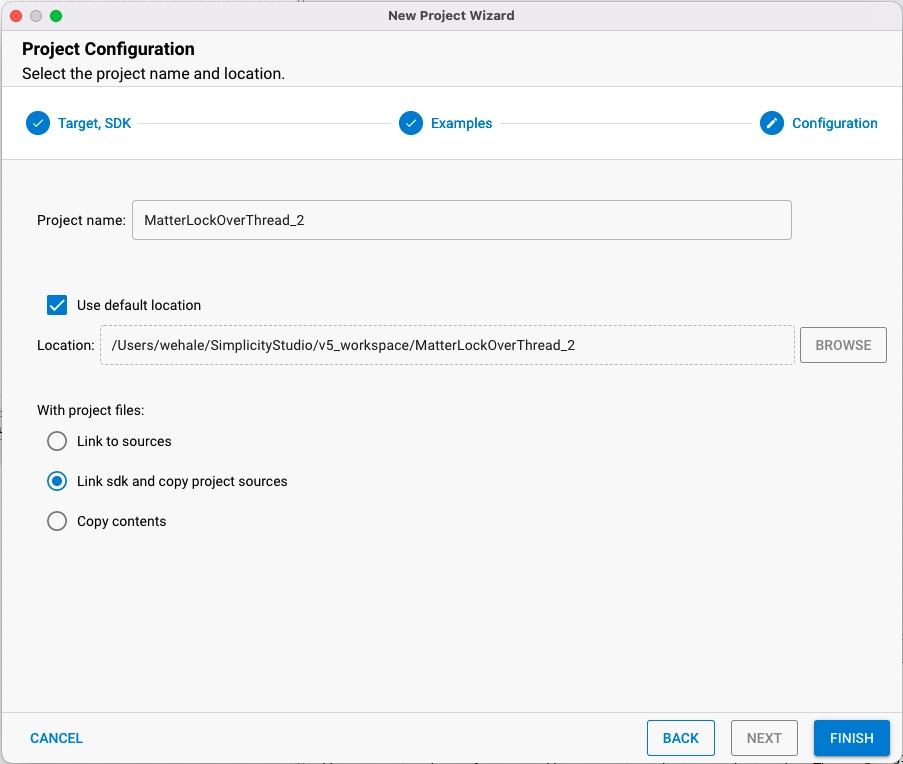

Creating a Matter Application in Simplicity Studio
Simplicity Studio supports a variety of ways to create an example project. This section uses the New Project Wizard, which allows you to modify all of the project parameters.
Note: Matter has specific hardware requirements. Before you begin a new Matter application be sure that you have satisfied the hardware requirements as outlined in the Hardware Requirements Page.
Using the New Project Wizard
In Simplicity Studio navigate to File > New > Silicon Labs Project Wizard... This opens the New Project Wizard, which will guide you through the process of creating a Matter application from a Matter Sample Application.

The Simplicity Studio New Project Wizard allows you to select the board, target device, SDK and toolchain you will be using. Be sure that the following requirements are met so that the Matter sample applications show up as options in the sample app selection.
Be sure that you have selected a part which is supported by the Matter extension. Parts supported by Matter are listed in the Hardware Requirements Page.
Be sure that the Matter extension is loaded into the GSDK that you have selected. You should see
Matterlisted as a supported stack in the SDK.Select the GNU ARM toolchain.
Once you have made all the proper selections click Next.

On the Example Project Selection dialog, select Matter on the left hand filters to see all the Matter Sample Applications that are compatible with your part. Select a project and click NEXT.

On the Project Configuration dialog, enter the name to use for your project. The name must be unique. Click FINISH. The Simplicity Studio perspective changes to the Simplicity IDE. Typically the project opens with descriptive text on a README tab.
Although you can build your sample application now, you can also modify its functionality. A description of possible modifications is included in the next section: Modifying a Matter Application in Simplicity Studio